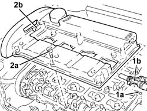
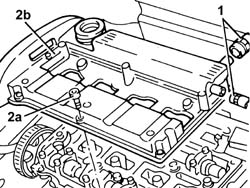
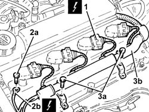
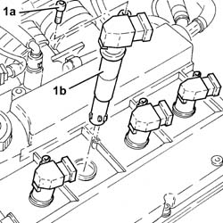
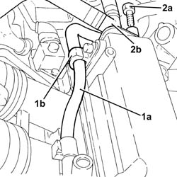
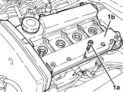
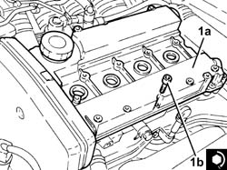
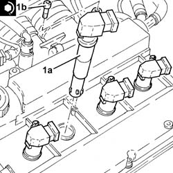
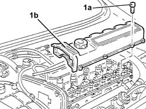

1016A20 single cam cover - r + r and replace gasket
- Path
- Procedures > 10 ENGINE > 1016 CYLINDER HEAD/S > 1016A cam covers > 1016A20 single cam cover - r + r and replace gasket
- Kind
- repair procedure (removal / refitting; the operation number is the code)
- Applies to
- engines: 1.6 TS , 1.8 TS, 2.0 JTS, 1.9 JTD 8v , 2.0 JTS, 2.4 JTD 10v; all production periods
- Interactive page
- https://sloeber94.github.io/elrnDB-a156/en/#/3237651
Applies to: engines: 1.6 TS , 1.8 TS; all production periods
 Removing
Removing
 Refitting
RefittingDisconnect the battery negative (-) terminal.
 | Name | Connector |
|---|---|---|
- | Battery |
1016A40 ignition coil cover on cylinder head- r+r
Release the electrical wiring from the bands on the tappet cover.
Applies to: engines: 1.6 TS ; all production periods
1. Undo the bolt (1a) and disconnect the oil vapour recirculation pipe duct (1b) from the tapper cover.
2. Undo the bolts (2a) and remove the rocker cover (2b) complete with gasket.

Applies to: engines: 1.6 TS ; all production periods
1. Disconnect the oil vapour recirculation pipes from the tappet cover.
2. Undo the bolts (2a) and remove the rocker cover (2b) complete with gasket.

Applies to: engines: 1.6 TS ; all production periods
Refitting
RemovingFit the tappet cover, complete with a new seal, and fix it tightening the bolts to the recommended torque.
Connect the oil vapour recirculation pipe duct to the tappet cover and fix it using the bolt.
Applies to: engines: 1.6 TS ; all production periods
Fit the tappet cover, complete with a new seal, and fix it tightening the bolts to the recommended torque.
Connect the oil vapour recirculation pipes to the tappet cover.
Applies to: engines: 1.6 TS , 1.8 TS; all production periods
Fix the electrical wiring to the bands on the tappet cover.
1016A40 ignition coil cover on cylinder head- r+r
Connect the negative (-) battery terminal.
Applies to: engines: 2.0 JTS, 2.0 JTS; all production periods
Removing
RefittingEnsure that the ignition key is in the OFF postition, then disconnect the battery negative terminal.
| Name | Connector |
|---|---|---|
- | Battery |
Proceed with the removal 1016A40 ignition coil cover on cylinder head- r+r .
1. Disconnect the electrical connections from the ignition coils.
| Name | Connector |
|---|---|---|
1 | Ignition coil |
2. Undo nut (2a) and disconnect earth lead (2b) from the cam cover.
| Name | Connector |
|---|---|---|
2b | Earth on engine |
3. Undo the bolts (3a) and move wiring duct (3b) aside.

Applies to: engines: 2.0 JTS, 2.0 JTS; all production periods
1. Undo the bolts (1a) and remove the ignition coil (1b).

Applies to: engines: 2.0 JTS, 2.0 JTS; all production periods
1. Release the fuel delivery pipe to the high pressure fuel pump (1a) from band (1b) on the cam cover.
2. Undo the bolt (2a) and disconnect connector (2b) for the vapour recovery pipes from the cam cover.

Applies to: engines: 2.0 JTS, 2.0 JTS; all production periods
1. Undo the bolts (1a) and remove the tappet cover (1b), complete with seal.

Applies to: engines: 2.0 JTS, 2.0 JTS; all production periods
Refitting
Removing1. Refit the cam cover (1a), complete with a new gasket and secure it by tightening the bolts (1b) to the recommended torque.
 | Fastening | Component | Ø | Value (daNm) |
|---|---|---|---|---|
1b | Bolt | CAM COVER | M6 | (Cylinder head side) 0.8 ÷ 1.0 |

Applies to: engines: 2.0 JTS, 2.0 JTS; all production periods
Connect the vapour recovery pipe connector to the cam cover and tighten the corresponding bolt.
Secure the fuel delivery pipe to the high pressure fuel pump to the band on the cam cover.
1. Place the ignition coils (1a) back in their housings and secure them by tightening bolts (1b) to the recommended torque.
| Fastening | Component | Ø | Value (daNm) |
|---|---|---|---|---|
1b | Bolt | IGNITION COIL/REEL | M6 | (Tappet cover side) 0.8 ÷ 1.0 |

Applies to: engines: 2.0 JTS, 2.0 JTS; all production periods
Refit the wiring duct and secure with bolts.
Connect the earth lead to the cam cover and secure using the corresponding bolt.
Connect the electrical connections to the ignition coils.
Proceed with the refitting 1016A40 ignition coil cover on cylinder head- r+r .
Connect the battery terminal (-).
Applies to: engines: 1.9 JTD 8v , 2.4 JTD 10v; all production periods
Removing
Refitting1. Undo the bolts (1a) and remove the single tappet cover (1b) and the seal.

Applies to: engines: 1.9 JTD 8v , 2.4 JTD 10v; all production periods
Refitting
RemovingFit the single tappet cover complete with a new seal and fix it tightening the bolts to the recommended torque.
| Fastening | Component | Ø | Value (daNm) |
|---|---|---|---|---|
- | Bolt | CAM COVER | M6 | 0.8 ÷ 1.0 |
Topics linked from this page (6)
- 1016A40 ignition coil cover on cylinder head- r+r
- 5510C14 ignition coil/s - r+r
- A1 Battery
- A1B Battery ( BATTERY NEGATIVE )
- A30 Ignition coil
- C40 Earth on engine
Topics that link to this page (18)
- 1008C18 link mount on engine - r r
- 1008C19 engine link mount - r r
- 1016C10 cylinder head - r + r and replace gasket
- 1020D18 front crank shaft cover oil seal - replace
- 1020E10 oil seal cover (one) - l or r - on counter-rotating shafts - r + r and replace seals
- 1020E20 front oil seal of one counter-rotating shaft, l or r - r + r
- 1028H10 connecting rod and piston set - r r
- 1032B14 toothed timing belt - r + r for timing adjustment or replacement versions with air conditioner
- 1032B47 toothed drive pulley - r r for versions with air conditioner
- 1032B52 toothed driven pulley (one) - r + r
- 1032C18 mobile timing system tensioner - r + r for 24 valve engines
- 1032C32 fixed timing system tensioner (one) r + r
- 1036B10 overhead camshaft - r r on vehicle
- 1036B36 front crankshaft oil seal-r r with timing belt removed
- 1036C10 camshaft in cylinder head - r r on vehicle
- 1056B51 cam angle sensor r + r
- 1084B50 timing mount oil pipe - r r
- 1088C12 water pump - r+r for versions with air conditioner